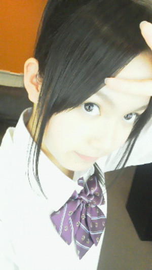
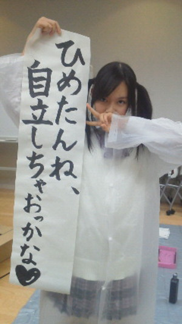
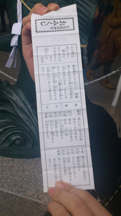
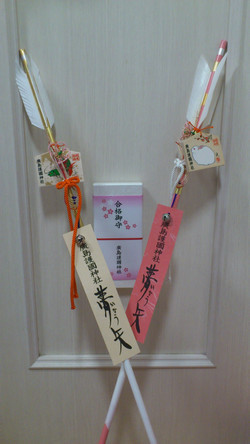
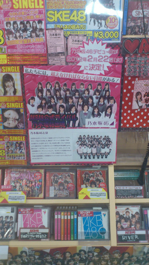
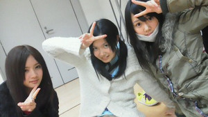

返回列表-BACK TO INDEX
ぽーにぃーてーる～♪

今朝は５時に起きて
撮影 頑張ってまいりましたひめたんです(`・・)ゝ
頑張ってまいりましたひめたんです(`・・)ゝ
ポニーテール。懐かしーい!
いやーん寂しい帰りたい!!!
新年迎えるちょっと前からひめたんはホームシックになりつつあります('・ω・`)
マネージャーという名のぱぱままと、
メンバーという名のお姉ちゃんがいっぱいおって
乃木坂ふぁみりーは今日も明日も大好きです♪
...ほいでもそろそろお家が恋しい
恋しいからここでコメ返！
 ひめたんは、高校生になったら東京に出て来るんだよね？
ひめたんは、高校生になったら東京に出て来るんだよね？
東京のここが苦手ってとこある？？？
そうですよー♪
東京の苦手なとこねーどこだろう...。
おみくじの画像は大吉ですけど、
あれはひめたんではなくてひめたんファミリーってことですか？
ひめたんを含めた中元ふぁみりーってことにしておこっかな(*^^*)
とかゆーてみる。
実際大吉引いたのはひめたんの妹かな。
昔でも今でもいいけど憧れの人っている？
Perfumeセンパイっ(//∀//)♪
長かったであろう下積みの時代から真面目に努力して
こんなにビックになった素敵な先輩たち。
なかなか認めてもらえなかったり
辛い事があった時も
諦めないで夢を叶えて輝いている 先輩たちがいるから
先輩たちがいるから
ひめたん諦めないし頑張れる♪
お餅を2分の1個って少なっ！
ダイエットしてるのかな？
あー最近は食事には気を配るようにしとる(ω)
ひめにょんって絵うまいの？
にゃは(ω)★
ひめたんは野球好き？
これ前に同じ質問あったけど、もう一回？？
ルールとか全然わからんけど、野球少年はかっこいいと思います(*^^*)
ちなみにひめたんに野球をさせたら大変なことになります。
ピッチャーとキャッチャーの違いがわかるレベル。
('・ω・`)
今度広島行った時ひめたんに案内してもらおうかな？笑
はいーよろこんで!
楽しいコースをプランニングして待っとるけえ、いつでも広島きてね♪
(∀)わら
ひめたん
2012/01/08 00:37｜
前回言いそびれたことがあったー
ひめたんブログ更新50回越え(`・ω・')!
たくさんの方に見ていただき、人の方とコメントを通してお話しできました♪
気づいてました？コメ返がない日のひめたんのブログさびしーの。
みなさんからのコメントもひめたんブログの一部
ってことで、
ちょいコメ返ー！
ホームシックに、なっていませんか？
寂しくなったら、声に出してくださいね。
ブログで叫んでもいいからさ。
帰りたーい(>_<)!!!
『チャラ字』=『汚い字』って意味なんだけど広島では通じる？
へーえ初知り!
広島人には通じない多分。
方言とは違うんでしょうねおそらくね。
うちのショップにも乃木坂のPOPと予約券が並んでるよ！
緊張？ワクワク？
どんな心境なんかな？
あんびりーばぼー!
乃木坂のレッスンってどれくらいの頻度であるの？毎日？
まいにち(`・・)ゞ
んでもひめたんは、平日は広島なので参加できません。
東京組がうらやましいー。ひめたんも上京してはよレッスン参加したい!
オタフクは有名だけど牡蠣醤油はとう？
やっぱりたくさん使うの？
牡蠣醤油使ってみたい!
ひめたん家にはないです。食べたことないー。
でも今まあや(和田まあやchan)に聞いたら、
和田家の食卓には常備してあるんだって(ω)♪
え？中元家だけ？
うん。つながってる。みなさんとつながってますよひめたん。
今まで遊びにきてくださった方、ありがとうございます!
よーし。この調子で100回も200回も更新しちゃいますよー＼^^／★
これからもよろしくお願いしますー♪
さて、ひめたんはさっきまでＡＫＢさんスペシャル見てました
なんか、とりあえず、
改めて尊敬。
テレビで見たのはほんの一部分だとは思いますが、私たちの知らないところで
いろんなもの乗り越えてこそ「日本のトップアイドル」って名前が似合うんですね。
番組の最後のメドレー、さらにＡＫＢさんがキラキラして見えました!
のと同時に。
乃木坂ー!
乃木坂46が越えるべき壁の高さを実感しました。
だって。だってだって!
ライバルライバルって簡単に名乗れないですとうぶん。
だってＡＫＢさんを越えるってことは、日本一のアイドルになるってことですよ(・o・ノ)ノ!
だからＡＫＢさんよりももっともっと頑張らんとなって思いました。
ってのと
私たち乃木坂46は恵まれてるなって。
だってデビュー前から応援してくだってる方がいて
遠いながらも目標が明確であって
それにむかって一緒に頑張る33人の仲間がいて
私たちはひたすら前に進むだけ
ゴールを信じて努力するだけ
よーし。
もっかい気合い入れ直してきますせーのっ
努力!感謝!笑顔!うちらは乃木坂上り坂!46!いえーい!
明日から心を入れ替えて、今まで以上に頑張らせていただきます。
明日ゆーて日付かわったから、今日から!
よし。よし。
あした朝早いから、ひめたん寝ちゃおっと。
('・ω・`)
ひめたん
2012/01/07 00:20｜
新年のご挨拶させてくださいっ!会
楽しかったぜよー(^^)
明日どんなことやるんやろ
ひめたんどんなことやったか教えてね
また夜にでも今日のレポお願いしま～す!(b^ー°)
blogでレポート待っとるばい！
イベント終わったらちょっとでいいからネタ晴らしよろしくね。
今日は何をしたかというとね
お餅つきをさせていただきー、
おしるこをみなさんに振る舞わさせていただきー、
新年の抱負を発表させていただきましたー。
はい。お正月らしいことした。ひめたん新年迎えましよ!
習字もしたしっ

ひなぴょん(川後陽菜chan)には「おせち料理」って言葉が通じないし
いくたどん(生田絵梨花chan)には「書き初め」って言葉が通じないし
ほしみな(星野みなみchan)は「お参り」と「お祓い」を間違えるし
はっぴーにゅーいやー。
＼(∀)／♪
あーそうそう。
イベント前に乃木神社でお参りしてきました!
乃木坂46にとって素敵な1年になったらいいなー。
よし!頑張る!!!
乃木神社でもらったお守り大事にする!!!ひめたん実は...2個目だったりする...。
かずみん(高山一実chan)さゆりん(松村沙友理chan)べびたん(伊藤万理華chan)と
オープニングトークできてよかった!
楽しかったよみんなーありがとうね♪♪
広島弁で、さよならや、バイバイって、どう言いますか？
生駒さんの、へばなっ！が、気になります。
広島弁で、インパクトのある挨拶を教えてください。
ばいばいー...
広島の挨拶はわりと普通かな。
そう!メンバーのみんなと気づいたのよー!
広島とか大阪とか九州は語尾が方言になったりするんぢゃけど、
北海道とか秋田とかは名詞が方言ってゆー。
あっ！ばいばいーの他に...ほいじゃーとかほいじゃーねーとか言う人もいる。わら
ショッピングはどちらに行かれたんですか＾＾？
渋谷？
池袋・渋谷・原宿!
今どきのおんなのこが集まる場所を制覇してまいりました(ω)★
四季の中では何が一番好き？？
はる(*^^*)
春は出会いの季節っていうし
あったかいからお昼寝するのにちょうどいいし
ひめたんのお誕生日が待っとるし♪
今年の春は特に節目になりそうだし。
ひめたんは乃木坂メンバーのblogは見てる？
ぱそこんが手元にある時は全員分みます♪
ひめたんの携帯だとフィルタリングかかっとってブログにアクセスできん('・ω・`)ちーん
乃木坂キャラ濃ゆいですよね。文章見ただけで誰が書いたかわかるもんっ
めざましテレビ観てたら
乃木坂の新しいCM流れてたよ～
「乃木坂46、始動」
ちなみに、7時25分ごろだった観るしか！w
報告ありがとうございます(`・・)ゞ
乃木メン誰もそのＣＭ見とらんかったー!
みるしか!
乃木坂コールって、メンバーが考えたのかな？
そですよ♪
メンバー全員でちょっとずつ案出し合って決めましたよー(ω)
そして
みゅみゅ(若月佑美chan)おかえりー∩^ω^∩
乃木坂はみんな頑張り屋さんぢゃけど、みゅみゅは乃木坂1の頑張り屋さん
いっつもハングリーで、上を目指してる。プロ意識がつおいんだよね。
誰よりもいっぱい泣いて、誰よりも負けず嫌いで、誰よりも闘魂Ｔシャツが似合うみゅみゅ
大好きやー(//ω//)
ひめたん
2012/01/05 23:58｜
みさみさおたおめみさみさ!
みさみさ(衛藤美彩chan)のお誕生日会しました∩^ω^∩★
お姉たまー♪♪
それがね。このまえせいたん(畠中清羅chan)家泊まった次の日に
せいたん、みさみさ、ひめたんと３人でもお泊まりしたのよー。
しっかりしとって尊敬する!
みさみさお姉たま声が優しいのよ(^^)みなさんもそう思いますよねー？
らすとteenだそうです。楽しい1年になりますように。
あ、日芽香ちゃんは初詣には行かれましたかー？？
初詣は3日までに行けばOKだった気がする(｀・∀・´)
今日中に行ければセーフだね♪
ひめたんは行けなかった('・ω・`)
代わりに昨日家族みんなで行ってくれたみたいです♪
そして代わりにおみくじ引いてくれたんと。
ひめたんの今年の運勢はー？
どぅるどぅるどぅるどぅるーじゃじゃじゃん!
大吉!!!!!!

じゃなくて
ひめたん小吉。
(`・ω・')
いちばんリアクションに困る結果ですよね。可もなく不可もなく。
うん
今年も頑張ろーう!おー(ω)/!
というわけでひめたんのお正月エピソードはもうちょっと続きますよー♪
中元家はまた今年も「夢叶う矢」てのを買ったんだって!
去年はぴんくで、今年はゴールド(//ω//)

でもね、矢を買うときにね、ほんとは去年の矢を返さなきゃなんだけど
おうちに忘れてきちゃったらしいのよー。
だから来年２本返すことにしますっ
初夢何か見ましたか～？？
あー覚えてない('・ω・`)
しかもその日年賀状書いとってあんま寝とらん...
うー来年こそは富士・鷹・なすび!
お正月といえばお年玉、ひめたんはもらったのかな？
ぱぱままの分は送ってもらったです♪
親戚のみなさんには今年ご挨拶できんかった('・ω・`)←
お年玉とかいらんけ会いたい!
親戚のクッキーちゃんってヨーキーにも会いたーい!!!
ひめたんもお餅食べたかな？
ひめたんはなに餅が好き？
お雑煮のお餅を２分の１こ食べた(・∀・)
いつもはもっぱらきなこ餅派!ひめたんいっつも焼く係よーお♪
電子レンジだって美味しく焼けるんぢゃけ。うん
今気がついたんだけど、中元日芽香という名前に「元日」が入っているね☆
すごく縁起のいい名前だね(^O^)/
中元日芽香...ほんまぢゃー!
15年と8ヶ月半生きてて、始めて自分の名前の縁起の良さに気づいた瞬間。
お買い物に行って福袋を買ったのかな？
お気に入りの洋服とかは入っていましたか？
福袋買いましたよ(^^)
ひなぴょん(川後陽菜chan)とおんなじ福袋かったら、中身がまったくおんなじだったー
おそろいってことですね♪
ひめたんを妹にしたいのですが、いいですか
もちろん(ω)♪
いや、ひめたんの中ではすでにお兄さんお姉さんとお話ししとるつもりーふふふ。
シングルイベントで個別があるけど、ひめたんに何回も行くと迷惑ですか？？？
全然まったく!むしろ嬉しいーいいぃ♪♪
何回も来てきてー!待ってますよー＼^^／
楽しいお話いっぱいしたいな!
2012年最初のイベント「乃木坂46 新年のご挨拶させてくださいっ！会」
行くよーって方はよろしくお願いします(^^)ノ
明日はねー、お正月らしいことする予定だよねきっとね。
よし。
イベントにそなえて今日は早く寝る。
明日も頑張るんぢゃけ!
ひめたん
2012/01/04 22:47｜
れっすん。
乃木めんはレッスンの始めと最後に必ず乃木坂コールするんですよー
努力!感謝!笑顔!うちらは乃木坂上り坂!46!いえーい!
...。
このフレーズを文面化すると「!」が多いことに気づいたよひめたん(・o・ノ)ノ
それだけ勢いがあるってことぢゃね。ふふふ♪
ひめたん筋トレ苦手ぢゃー('・ω・`)
でも充実しとった。真冬に半袖でいい汗かきました!
明日筋肉痛決まりぢゃね。あーいたたたた(>_<)!
そいえばままからのメールによると、地元のとあるＣＤショップに
もう乃木坂46のポップがあったらしいー!

うわーうわうわうわ。こりゃびっくりするしか!
右横にスペースも空けてある！
携帯に貼ってあるシールは何かな？
「もう我慢できません-I cannot endure It anymore-」
わんちゃんがごはんを我慢してるイラストつきω
ぴったりぢゃーんって思ったから(*^^*)
ひめたんの部屋はどんな感じなのかな？
んー
家具は赤と白でまとめてる!
この写真いつ撮ったの？ホテルで撮っているようにも見えるのだが…。
ぴんぽーん(∀)!
乃木坂の初期の初期!
ひめたん最近前髪分けとるんぢゃけど、
ぱっつんと分けとるのみなさんはどっちが好きですかー？
ひめたんは乃木坂のテストで１番成績よかったので、勉強法とか聞きたいです
全国の乃木坂応援してる受験生に、ひめたんから応援メッセージくださーい＼(^O^)／
はいー。
お勉強法かぁ。暗記系の科目だったら、オレンジのペンとかでノートまとめをして
赤下敷きで隠す!スライドして覚える!
ノートまとめで覚えて、さらに復習して頭にたたきこむ(`・・')
受験生のみなさーんひめたんと一緒にステキな春を迎えましよーう♪
体調崩したら遅れをとっちゃうから、無理はせんでね？
今年のひめたんの目標は何ですか?
乃木坂46としての活動が充実できるよう頑張る!
ステキな女子高生になる(*^^*)
ブログのコメントがたくさん増えても、ある程度はファンとの交流を計ってくれるかなー？？？
もっちろん(ω)♪
だからみなさんこれからも遊びに来てくださいよー？
日芽香さんってボケとツッコミどっちですか？
大抵ぼけ(ω)
でもひめたん以上にボケる人といるとツッコミにかわります♪
ひめたんお正月は着物着たりするの？（今年は東京だからないかな？）
広島におっても着物は着んかなー。
去年の夏祭りの時は着ましたきました(^^)
メンバーと初詣に行くのかな？
んー未定('・・`)
地元に帰ってから初詣いきたいんぢゃけど、まだやっとるかなー？
その頃には終わっとる気がする...。
おみくじ何でしたか？ひめたん萌吉とか出そうやし(^_^)
も、も、もえきちー!!!
(*/ω＼*)
萌吉のおみくじ引きたいっ!
でもひめたん実際、去年末吉引いたんよ...。
ぢゃけ怖くて引けない('・・`)
にゃおす∩^ω^∩★

せいたんひめたんらりん
ひめたん
2012/01/04 00:02｜
返回列表-BACK TO INDEX
{kind=link}
{kind=link}
{kind=link}
{kind=link}
{kind=link}
{kind=link}
{kind=link}